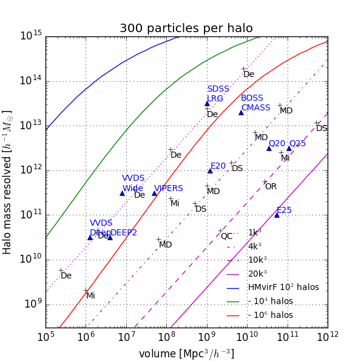

DM statistics for large galaxy catalogs, P(k) and its covariance
TEXT
Please click
here
to access the PPM GLAM results.
Acknowledgement
If you use these functions, please cite
Klypin et al. 2017
last update, jan. 2017, by
J. Comparat